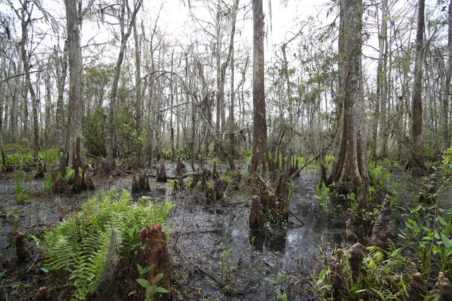
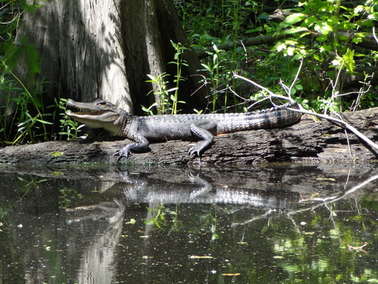
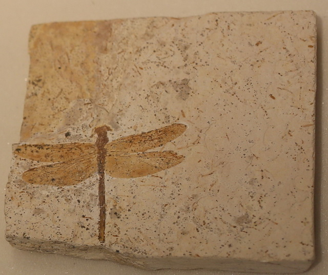
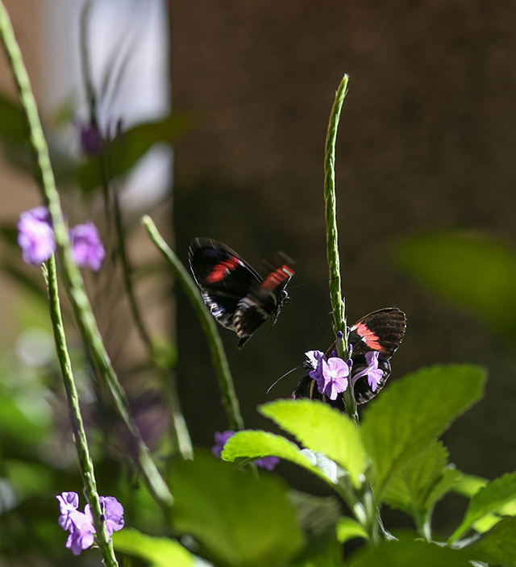
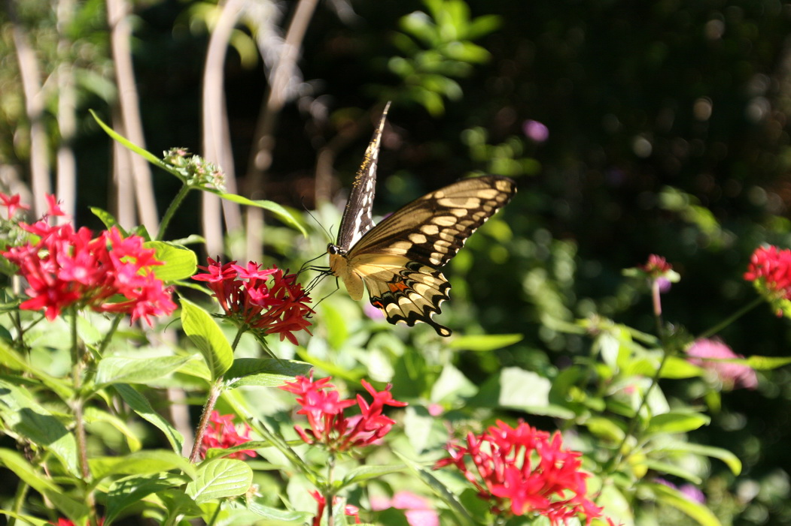
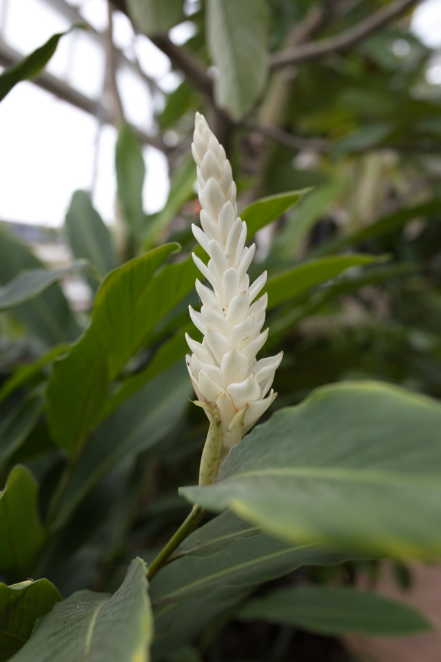
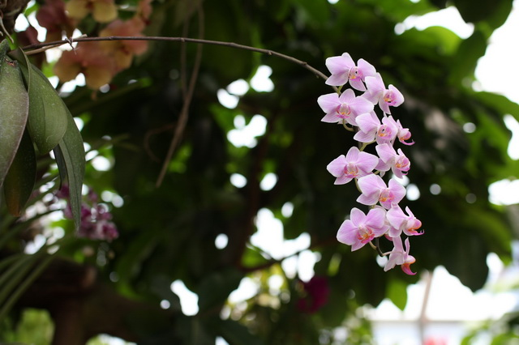
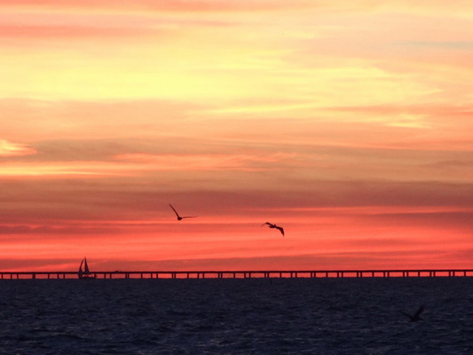

photos
Food and music are legendary in New Orleans. Apart from the rich cultural heritage, there are plenty of places for people to go and spend time. Below are pictures from places in and around the city.
Updated on May 29, 2017.
New Orleans Museum of Art
Faberge Egg Tree 
Woman in Ball Gown by Franz Winterhalter 
Jean Lafitte National Historical Park and Preserve




Audubon Butterfly Garden and Insectarium




Audubon Aquarium of the Americas


The City
(The infamous Bourbon Street)
City Park and Botanic Garden




Sunset over Lake Pontchartrain

Belle chasse air show
Blue Angel